noel 테마 시즌
크리스마스와 겨울 여행 발표용 테마다. 처음 열면 짙은 전나무색 밤 바탕이고, d 키를 누르면 크림색 종이 바탕으로 바뀐다. 슬라이드 맨 위에 지팡이 사탕 줄무늬가 한 줄 지나가고 바탕에는 눈이 천천히 내린다. 제목은 명조 글꼴로 쓰고, 굵게 쓴 부분과 숫자는 빨강에서 금색으로 넘어가는 그라디언트로 칠한다. 카드와 타일에는 금색 가는 테가 둘린다. 레이아웃과 카드·스탯·차트 컴포넌트, 목차 사이드바, 원고 보기, 넘침 표시는 jussam과 같아서 jussam 덱의 테마 경로만 바꾸면 그대로 열린다.

미리보기
모두 예제 덱의 쪽이다. 그림을 누르면 원본 크기로 열린다.


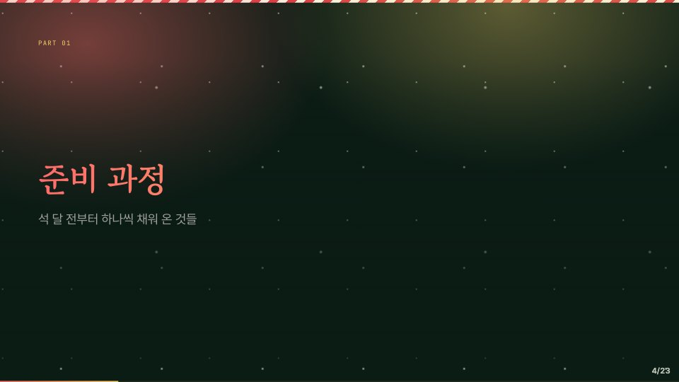


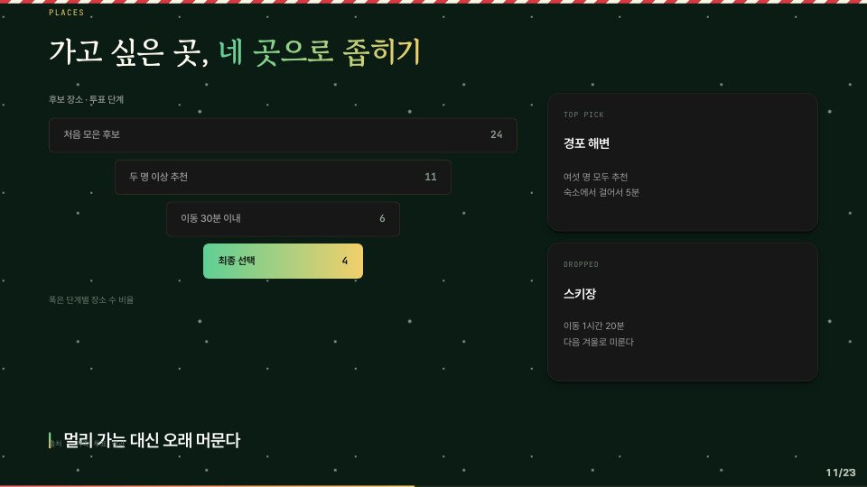

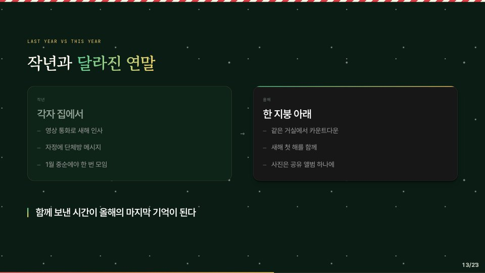

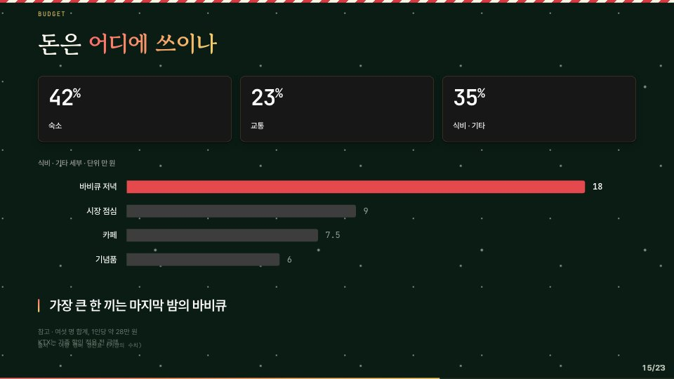

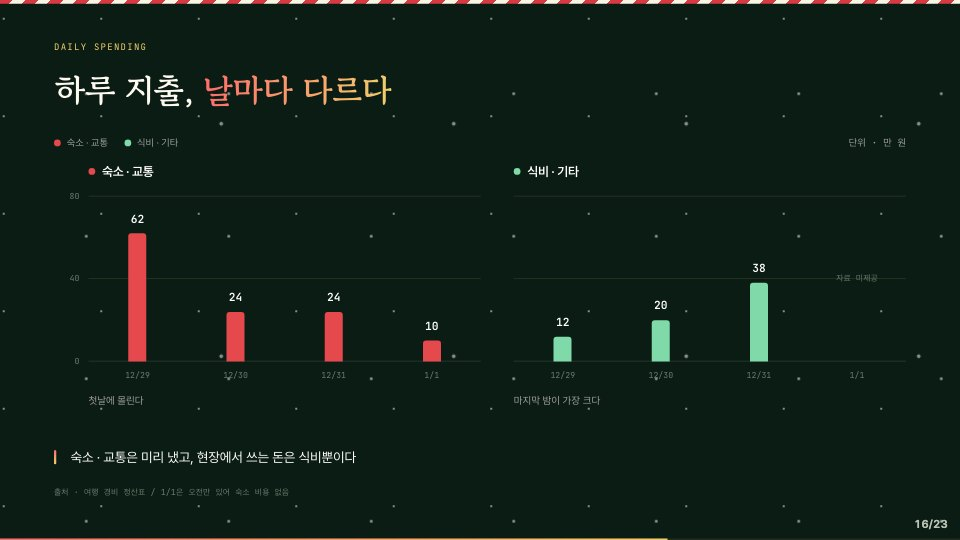

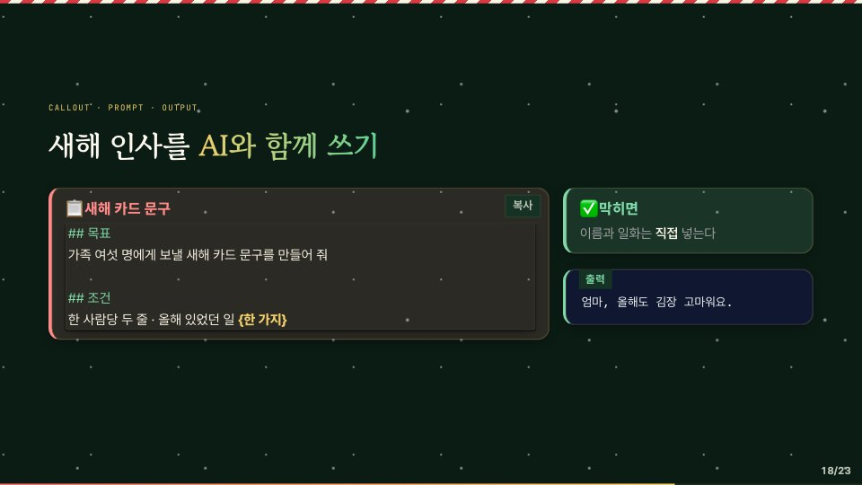

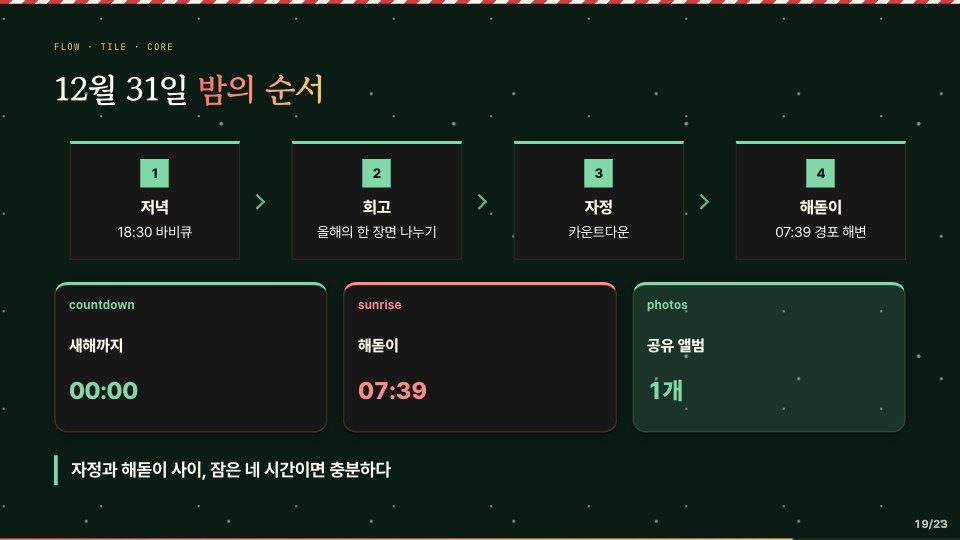

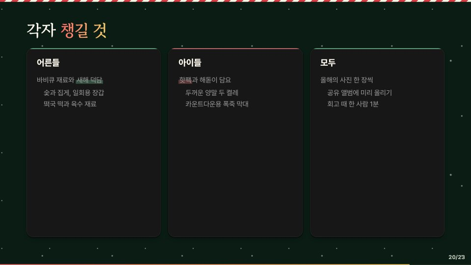

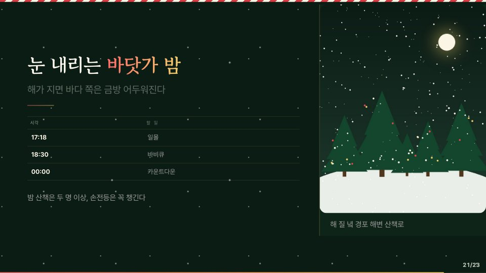

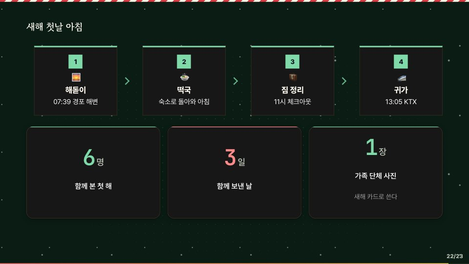

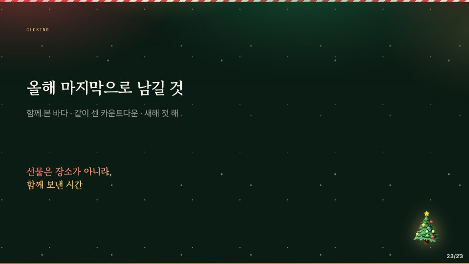


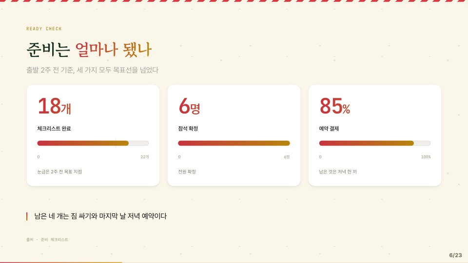
시작하기
저장소를 받은 뒤(git clone https://github.com/leekh4232/slidev-themes.git) 프런트매터에 테마 폴더 경로(theme: ./slidev-themes/noel처럼 md 파일 기준)를 적는다. 첫 슬라이드의 프런트매터(헤드매터)에는 덱 전체 설정과 첫 슬라이드 설정을 함께 적는다.
| 옵션 | 값 | 기본 |
|---|---|---|
colorMode | light면 크림색 밝은 테마, dark면 전나무색 밤 바탕으로 덱을 연다. 발표 중에는 d 키로 바꿀 수 있다 | 처음 한 번 어둡게, 그 뒤엔 마지막에 고른 테마 |
exportDark | true면 PDF·PNG 내보내기를 어두운 테마로, false면 밝은 테마로 | true (colorMode를 적었으면 그 테마) |
fontScale | 본문 배율(0.6~2). 덱을 이 배율로 열고, 0 키·배율 버튼을 누르면 이 값으로 돌아간다 | 마지막에 고른 배율 |
manuscript | true면 사이드바에 📄 원고 버튼(덱 원고 md를 깃헙 스타일 문서로 보기), false면 뺀다 | true |
sidebar | true면 발표 화면 왼쪽에 목차 사이드바(슬라이드 바깥), false면 슬라이드만 | true |
---
theme: ./slidev-themes/noel
title: 겨울 여행 · 강릉 연말 2박 3일 # " · " 앞은 사이드바 머리말 · 표지 머리말, 뒤는 단원 이름
author: 여행 준비팀 # 생략 가능. 첫 표지 제목 아래 작성자
layout: cover # 첫 슬라이드는 표지
eyebrow: winter trip · 2026.12.29 – 12.31
footer: 여행 준비팀 / 2026년 12월
---
# 바다 앞에서 맞는<br>**한 해의 마지막 밤**
강릉 연말 2박 3일, 가족 여섯 명의 여행 계획슬라이드는 항상 16:9(1280×720 캔버스)이고 창에 맞춰 비율대로 확대·축소된다. 넘치는 내용은 잘리고 빨간 테두리와 넘친 길이가 표시된다(발표 화면만). 사이드바는 처음에 접힌 채 열리고 ☰ 버튼이나 s 키로 펼친다. 단축키(s 사이드바, a 애니메이션, d 테마, + - 0 배율)와 조작은 jussam의 사이드바와 조작과 같다.
jussam과 다른 점
구조(레이아웃 · 컴포넌트 · 프롭)는 jussam과 같고 겉모습만 다르다. 색과 장식은 noel/styles/noel-skin.css 한 파일에 모여 있다.
| 항목 | noel |
|---|---|
| 바탕 | 어두운 테마는 짙은 전나무색(#0b1c15), 밝은 테마는 크림색 종이(#fbf6ea) |
| 지팡이 사탕 줄무늬 | 모든 슬라이드 맨 위에 5px 높이의 빨강 · 흰색 사선 줄무늬 |
| 내리는 눈 | 바탕에 크기가 다른 눈송이 세 겹이 38초에 걸쳐 천천히 내려온다. 바탕 그림이라 내용 크기나 넘침 계산에는 영향이 없다. a 키로 애니메이션을 끄거나, 운영체제의 동작 줄이기 설정이 켜져 있거나, 인쇄 · PDF로 내보낼 때는 멈춘다 |
| 제목 글꼴 | h1 · h2 · h3는 명조(Gowun Batang, Google Fonts). 글꼴을 받지 못하면 Nanum Myeongjo · Noto Serif KR 순서로 쓴다. 본문은 Pretendard 그대로 |
| 강조색 | 제목의 **굵게**, 숫자, 머리말이 빨강 → 금색 그라디언트. 머리말(eyebrow)은 금색 |
| 표지 · 간지 | 메시 그라디언트 대신 트리 불빛처럼 번지는 빨강 · 초록 · 금색. 표지(cover)에는 오른쪽 아래에 🎄 트리가 붙는다 |
| 카드 · 타일 | Tile · Callout · Stat 상자에 금색 가는 테 |
| 웹진형 | 오른쪽 그림 띠 왼쪽에 금색 세로선 |
레이아웃
여섯 레이아웃의 이름 · 쓰임 · 프런트매터는 jussam의 레이아웃과 같다.
| 레이아웃 | 쓰임 | 프런트매터 |
|---|---|---|
cover | 표지 · 마무리 · Q&A. 불빛 번짐 바탕과 트리, 위아래 머리말. 첫 표지(1쪽)에는 덱 헤더의 author가 제목 아래 붙는다 | eyebrow, footer, mesh(soft 옅게 / none 없음), source |
section | 파트 간지. 제목이 파트 색 그라디언트로 칠해진다 | part(1~4), eyebrow |
default | 본문. 적지 않으면 이것. 내용은 세로 가운데 | eyebrow, part, source |
cards | 제목 아래 <div> 칸들이 둥근 카드 격자가 된다. 칸에 py · ai · ok를 주면 위에 색 선 | cols(기본 3) |
magazine | 왼쪽 큰 제목 + 리드문 + 본문, 오른쪽 ::right:: 칸. 오른쪽 첫 요소가 <img>면 칸을 꽉 채운 그림 띠가 되고 그 아래 문단은 설명이 된다 | - |
infographic | 제목은 위, 나머지는 가운데 무대 | - |
---
layout: section
part: 1
---
# 준비 과정
석 달 전부터 하나씩 채워 온 것들
---
layout: magazine
---
# 눈 내리는 **바닷가 밤**
해가 지면 바다 쪽은 금방 어두워진다
::right::
<img src="./img/noel-night.jpg" alt="눈 내리는 밤의 전나무 숲 그림" />
해 질 녘 경포 해변 산책로파트 색
part를 1~4로 주면 그 슬라이드의 강조색(제목 굵게, 머리말, 카드 윗선, 숫자, 세로선)이 함께 바뀐다. noel의 파트 색은 빨강 · 초록 · 금색 세 가지로만 만든다. 밝은 테마에서는 같은 계열의 더 진한 색을 쓴다.
| part | 색 | 어두운 테마 | 밝은 테마 |
|---|---|---|---|
| 1 | 빨강 → 금색 | #ff6b6b → #f2cf6b | #c8323f → #b8860b |
| 2 | 초록 → 금색 | #5fcf95 → #f2cf6b | #1f7a4d → #b8860b |
| 3 | 빨강 → 금색 | #ff6b6b → #f2cf6b | #c8323f → #b8860b |
| 4 | 금색 → 초록 | #f2cf6b → #5fcf95 | #b8860b → #1f7a4d |
컴포넌트
md 안에서 태그로 쓴다. 아래 컴포넌트는 모두 jussam과 이름 · 프롭이 같고 색만 noel을 따른다. 프롭과 예제 코드는 각 행의 링크(jussam 매뉴얼)와 파일(noel/components/*.vue) 머리 주석에 있다.
| 컴포넌트 | 쓰임 | 프롭 |
|---|---|---|
Grid | 칸 나누기. 열 수나 grid-template-columns 값 | Grid |
Card | 둥근 카드. 머리말 · 제목 · 윗선 · 크기 · 흐림 | Card |
Stat | n이면 미터가 달린 큰 숫자 카드, value면 숫자 타일 | Stat |
Kicker · Note · Spacer | 세로선 맺음말, 작은 주석, 남는 세로 공간 | Kicker · Note · Spacer |
Hero | 큰 숫자 한 개 + 오른쪽 제목과 설명 | Hero |
Agenda · NumList · Item | 목차와 번호 목록 | Agenda · NumList |
BeforeAfter · Side | 왼쪽(흐림)과 오른쪽(강조)을 나란히 놓는 전후 비교 | BeforeAfter |
Timeline | events면 날짜 축, 없으면 <li> 단계 타임라인 | Timeline |
Gauge · Slope | 반원 게이지, 두 점 기울기 | Gauge · Slope |
Funnel · Branch | 단계별 퍼널, 한 곳에서 갈라지는 카드 | Funnel · Branch |
HBar · Meter · Bars | 가로 막대, 미터 한 줄, 세로 막대 패널 | HBar · Meter · Bars |
Mul · Formula | 카드 세 장 사이 ×, 낱말 수식 | Mul · Formula |
Callout · Prompt · Output | 콜아웃 · 프롬프트 · 출력 상자 | 기본 컴포넌트 |
Steps · Flow | 번호 목록, 가로 흐름도 | 기본 컴포넌트 |
Tile · Core · Chip | 타일, 핵심 한 줄, 글 사이 작은 라벨 | 기본 컴포넌트 |
YoutubeCard | 유튜브 썸네일(누르면 재생) | 기본 컴포넌트 |
형광펜 .hl, 빈칸 .blank, .card, .kicker, .tight · .flush 같은 클래스와 슬라이드 프런트매터 class: dense · compact · tbl-wrap · tbl-nowrap도 jussam과 같다. 컴포넌트 안에 마크다운을 쓰는 법, 긴 데이터를 프런트매터에 두는 법은 jussam의 주의할 점을 따른다.
---
part: 1
eyebrow: ready check
source: 준비 체크리스트
---
# 준비는 **얼마나 됐나**
출발 2주 전 기준, 세 가지 모두 목표선을 넘었다
<Grid cols="3">
<Stat n="18" unit="개" label="체크리스트 완료" :fill="82" :mark="70" scale="22개">눈금은 2주 전 목표 지점</Stat>
<Stat n="6" unit="명" label="참석 확정" :fill="100" scale="6명">전원 확정</Stat>
<Stat n="85" unit="%" label="예약 결제" :fill="85" scale="100%">남은 것은 저녁 한 끼</Stat>
</Grid>
<Kicker lead>남은 네 개는 짐 싸기와 마지막 날 저녁 예약이다</Kicker>전체 예제
noel-example.md — 가상의 연말 가족 여행 계획으로 만든 23장짜리 덱. 여섯 레이아웃과 위 컴포넌트 대부분이 들어 있다. 웹진형 쪽의 그림은 examples/img/noel-night.jpg다. 저장소 안에서 우클릭 → Open with Slidev.
### 굵게 그라디언트)